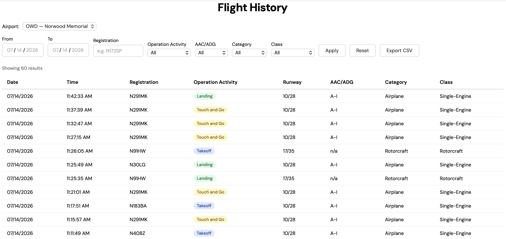
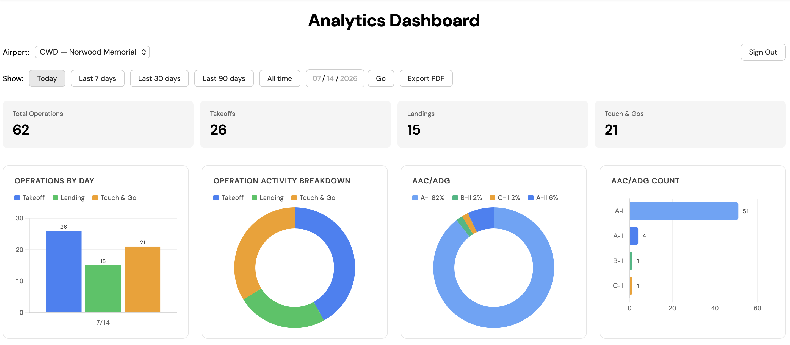
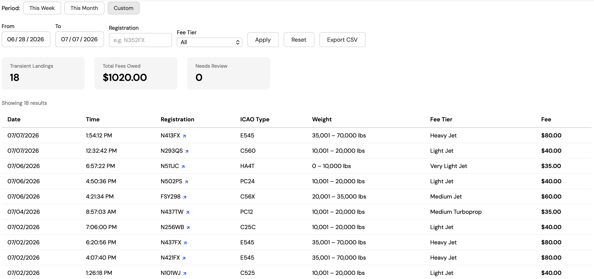
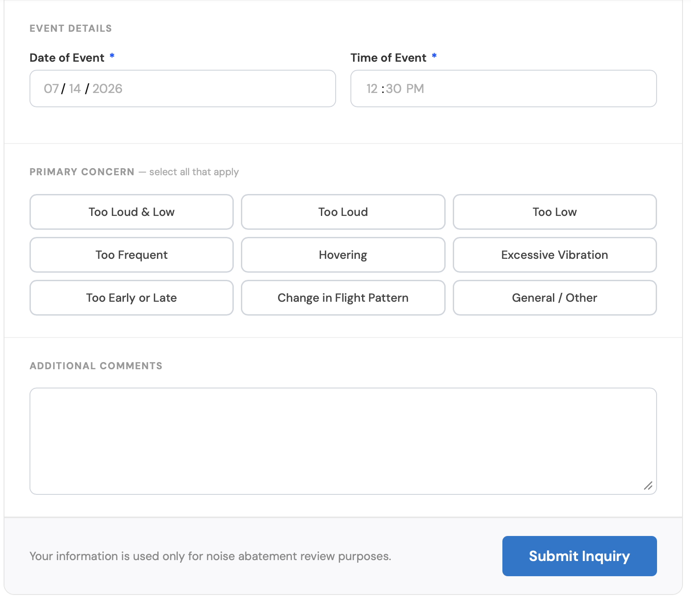
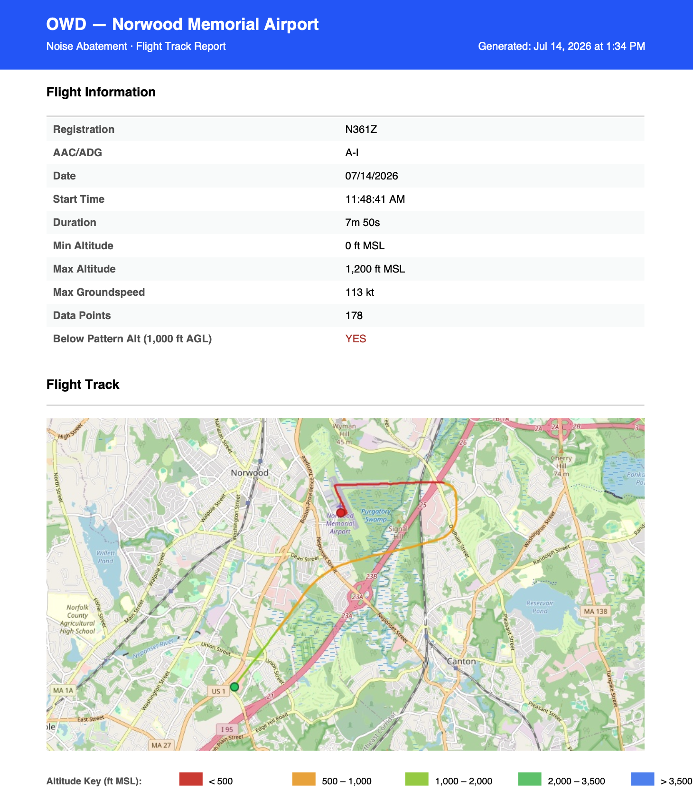

Live Video, Recorded Activity, Operations Data and Reports
FlightLevel Technologies is built to give airport leadership a comprehensive and actionable understanding of their airport network.


24/7 Video Recordings and Data Collection
FlightLevel Technologies provides live views of taxiway and runway activity along with recordings of operations for training purposes and incident investigation. 24/7 data collection and analytics ensure airport leadership can make informed decisions and generate FAA-ready reports in seconds. Additional features include a live airspace map, noise abatement tools, and landing fee billing.
Real-Time Airspace
Live Map
- Live aircraft positions and flight paths
- Customizable map backgrounds including VFR, IFR, satellite, and more
- Map layers such as weather radar, cloud patterns, special use airspace
- Filter by over 20 different data points

Historical Data
Flight History
- Historical event records updated in real-time
- Take control of your data by exporting it as a CSV file
- Switch between different airports in your network

Analytics
Dashboard
- Your airport data visualized in real-time
- Examine trends over time
- Breakdowns by day, week, month and quarter
- Downloadable in PDF format

Billing
Landing Fee Management
- Automatic detection of transient landings
- Aircraft classification by ICAO type code
- Adaptable to your network's fee schedule
- Link to every plane's registration for quick billing address lookup

Community Relations
Noise Inquiry
- Simple online form embeddable into your website
- Automated emails to airport staff and EOD summary emails
- All inquiries logged and stored for reporting
- Link to view all possible flight tracks responsible for the inquiry in the emails

Community Relations
Noise Abatement
- Visualize flight tracks within a 5-mile radius of the airport
- Altitude-colored flight paths for easy analysis
- Review historical tracks by date and aircraft
- Export flight track reports as a PDF

We Value Your Feedback
Please let us know any ways this website could be of more use to you. All comments and suggestions are greatly appreciated!